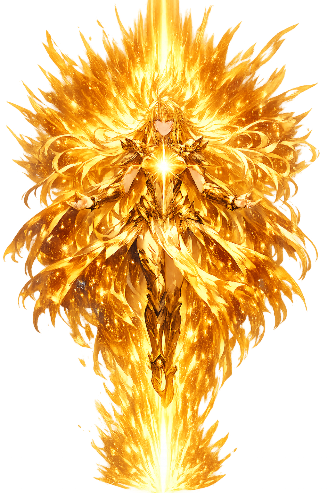

The Authentic Orthography
Origin, First Principle · Beginning, origin, rule

Unicode restoration and ASCII comparison
Ἀρχή
The name in its original Greek form. Archḗ (Ἀρχή) is attested in the source tradition — “Beginning, origin, rule”. Its aspirated consonants, long vowels, and acute accents carry the full phonetic and orthographic weight of the source tradition.
arche
Reduced to plain arche, the name loses everything that made it specific: aspirated consonants, long vowels, and acute accents. What remains is an ASCII string that machines can parse but that no longer speaks with its original voice.
Archḗ
The Unicode restoration recovers what ASCII flattened. Archḗ restores aspirated consonants, long vowels, and acute accents, returning the name to its original written dignity. The domain encodes to Punycode, but the browser displays the truth.
Archḗ.com → xn--arch-j64a.com
The non-ASCII characters in Archḗ are encoded while the ASCII remains visible. To the DNS, it is Punycode. To humanity, it is Archḗ.
How Archḗ is preserved in writing
A bespoke provenance study for Archḗ is being prepared by the PUNYCODEX scholarly team.
Contribute scholarly provenance →How Archḗ was spoken
Origin, Rule, Sovereignty
Arkhḗ is the Greek word for beginning, origin, and rule. For philosophers it names the first principle from which all things derive; for political thinkers it names legitimate authority. It is a concept so central that Western thought still builds on it.
For the Presocratics, the archē is water, air, fire, or the boundless from which all things come.
The same word means 'rule' or 'office'; origin and authority are inseparable in Greek.
In Orphic and Neoplatonic thought, archē names the ultimate source of the cosmos.
Every discipline seeks its archē: the axiom, cause, or origin from which it proceeds.
Stories of Archḗ
Arkhḗ has no traditional mythology. Its stories are philosophical: the search by Greek thinkers for the first thing, the ruling thing, the thing from which everything else can be understood.
Thales of Miletus declared that water (hydōr) is the archē of all things. Living things need water; land floats on water; water can become solid, liquid, and vaporous. His claim launched Western philosophy by asking not what things are made of but what they come from.
Anaximander argued that the archē cannot be any one element like water, since opposites must be generated from something neutral. He called it the apeiron, the boundless or indefinite, from which all things arise and to which they return by necessity.
Aristotle organized the search for archē into four causes: material, formal, efficient, and final. To know a thing is to know its archai. This framework dominated Western science and metaphysics until the scientific revolution.
Arkhḗ is the question that never stops being asked. What comes first? What rules? What makes everything else possible? Every civilization answers differently — water, fire, air, God, energy, information — but the form of the question is Greek.
Enter Extended Lore